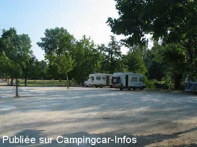
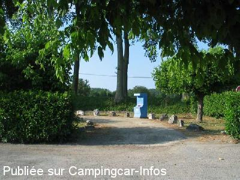

ASN = Aire de services avec stationnement nuit possible de :
AUBETERRE SUR DRONNE
(N° 324)
Accès/adresse :
Route de Ribérac, D2
16390 AUBETERRE SUR DRONNE
16390 AUBETERRE SUR DRONNE
Latitude : (Nord) 45.2693° Décimaux ou 45° 16′ 9′′
Longitude : (Est) 0.17617° Décimaux ou 0° 10′ 34′′
Tarif : Gratuit
Type de borne : FLOT BLEU
Services :


Tous commerces
Autres informations :
Ouverte toute l'année
10 emplacements
Tel :+33(0)545 985 033
Par arrêté municipal, le stationnement des camping-cars est uniquement autorisé sur le parking.
Accès interdit à la prairie et le long de la rivière
Le 23/10/2012 par Robert H35
Le 23/10/2012 par Robert H35
Le 23/10/2012 par Robert H35
Le 23/06/2005 par nomade 59

Le 23/06/2005 par nomade 59

Le 23/06/2005 par nomade 59
de
jéjé
le 28/12/2015 :
le 17 décembre 2015, nous avons été très déçus de cet aire près du stade même si les services sont gratuits. Je ne comprends pas qu'une ville aussi touristique ne fasse pas mieux pour recevoir les CC.
le 17 décembre 2015, nous avons été très déçus de cet aire près du stade même si les services sont gratuits. Je ne comprends pas qu'une ville aussi touristique ne fasse pas mieux pour recevoir les CC.
de
Michel
le 17/07/2015 :
De passage à AUBETERRE .Nous sommes très déçu ,mal grès la gratuité des services.L aire a été déplacée pour la saison d été.On nous a parque comme des bestiaux,au milieu d une poussière immonde,provoqué par le passage des voitures.Le séjour à été écourté.Nous venions pour visiter l églises souterraine,nous avons trouver porte close pour raison de festivités .Quel dommage .A évité l été.....
De passage à AUBETERRE .Nous sommes très déçu ,mal grès la gratuité des services.L aire a été déplacée pour la saison d été.On nous a parque comme des bestiaux,au milieu d une poussière immonde,provoqué par le passage des voitures.Le séjour à été écourté.Nous venions pour visiter l églises souterraine,nous avons trouver porte close pour raison de festivités .Quel dommage .A évité l été.....
de
brams
le 08/04/2015 :
Les services sont gratuits . Très tranquille
Les services sont gratuits . Très tranquille
de
Maybeline
le 04/05/2014 :
Services gratuits , pratiques et joli village à découvrir. Eglise souterraine, artisanats , églises et bâtisses. par contre , n'y avons pas dormi car la route est très proche .
Services gratuits , pratiques et joli village à découvrir. Eglise souterraine, artisanats , églises et bâtisses. par contre , n'y avons pas dormi car la route est très proche .
de
saclier
le 02/10/2012 :
§
passé fin septembre 2012. tout gratuit aire de vidange refait châpeau pour une commune de 180 habitants bonjours au responsable du cite qui nous à donné l'autorisation de stationner le long de la rivière
§
passé fin septembre 2012. tout gratuit aire de vidange refait châpeau pour une commune de 180 habitants bonjours au responsable du cite qui nous à donné l'autorisation de stationner le long de la rivière
de
joel 16
le 03/05/2009 :
La porte de la borne flot bleu était coincé, débloqué avec un tournvise (le vérou d'ouverture était gripé).
Aire agréable, plage de sable, aire jeux pour enfant, village à visiter.
La porte de la borne flot bleu était coincé, débloqué avec un tournvise (le vérou d'ouverture était gripé).
Aire agréable, plage de sable, aire jeux pour enfant, village à visiter.
de
tipoupe33
le 06/10/2008 :
aire agreable au bord de la dronne. Jolie petit village. Commerce a proximité. Aire de jeu pour les enfants et plage a coté. Pour vidanger les eaux usées il existe un petit regard a coté de la borne mais il faut viser.
aire agreable au bord de la dronne. Jolie petit village. Commerce a proximité. Aire de jeu pour les enfants et plage a coté. Pour vidanger les eaux usées il existe un petit regard a coté de la borne mais il faut viser.
de
Kevin & Sue Brice
le 06/10/2008 :
Well signposted - parking on riverside - easy access for the interesting village.
Well signposted - parking on riverside - easy access for the interesting village.
de
Ian Bruce
le 10/01/2008 :
Aire very quiet in December 2007. Plenty of space in beautiful location. Village very attractive and the Eglise Monolithe is a "must-do".
Highly recommended.
Aire very quiet in December 2007. Plenty of space in beautiful location. Village very attractive and the Eglise Monolithe is a "must-do".
Highly recommended.
de
jolly jumper
le 10/05/2007 :
Aire très agréable, nous y avons séjourné en mars. On avait de la place; belle balade dans le village, nuit très calme.
Aire très agréable, nous y avons séjourné en mars. On avait de la place; belle balade dans le village, nuit très calme.
de
joel Villalba
le 11/07/2006 :
Aire calme et agréable la nuit. Pratiquement impossible de stationner la journée durant la période estivale sinon vous restez coincé par les voiture (camping et plage à proximité). Le mieux est de partir dans la matinée et d'arriver après 19 h
Aire calme et agréable la nuit. Pratiquement impossible de stationner la journée durant la période estivale sinon vous restez coincé par les voiture (camping et plage à proximité). Le mieux est de partir dans la matinée et d'arriver après 19 h
de
Nomade 59
le 20/06/2005 :
8 à 10 places au bord de l'eau, sur terrain plat. Halte agréable.
8 à 10 places au bord de l'eau, sur terrain plat. Halte agréable.